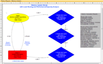
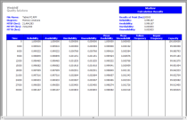

Windchill Markov
formerly Relex Markov
Windchill Markov combines flexible diagramming tools and powerful calculation capabilities to model complex systems and calculate key reliability metrics. By considering graphical representations of system states, sequence of events and event dependencies, Windchill Markov provides fast, accurate reliability analyses for complex systems with common cause failures, degradation, induced or dependent failures, multi-operational state components, and other sequence-dependent events.
 Advanced Modeling Capabilities. Windchill Markov provides graphical modeling for systems that exhibit dynamic behavior, sequence dependency and components with inter-dependencies, where future performance is determined solely by its current state. Represent a system in operational, degraded and failed states, with dynamic failure and repair rates. Windchill Markov considers systems with complex repair or restart procedures or complex common cause failures, and is able to account for consequences related to switchover mechanisms, repair priorities, limited repair resources, and failure sequence dependency.
Powerful Calculations. Windchill Markov utilizes a powerful Markov engine that supports both transient and steady-state analysis results. Calculate MTBF (Mean Time Between Failures), MTTF (Mean Time to Failure) and MTTR (Mean Time to Repair), along with a range of other reliability metrics including capacity, reliability and availability, failure frequency, cost and frequency of visits of a state. Consider associated costs in terms of currency, functionality or throughput. Dynamically link results to Windchill FTA to greatly expand analytical capabilities.
 Professional Outputs. Windchill Markov is supplied with a range of industry standard reports and graphs. Easy-to-use Report and Graph Wizards provide complete user customization of outputs to fit your specific needs, without the need for IT experts. Once complete, reports and graphs can be printed or saved directly to Microsoft Word or Excel, and Adobe PDF.
Markov Data Sheet
6509_Windchill_Markov_DS_EN.pdf
Adobe Acrobat document [136.7 KB]